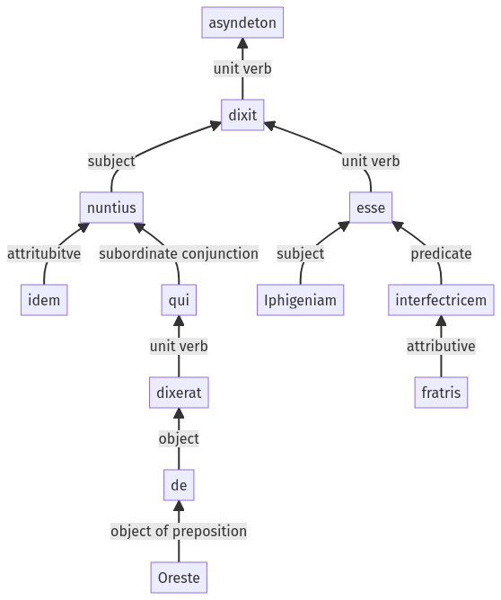

Hyginus, Fabulae, 122a.2.20-122a.2.30a
122a.2.10-122a.2.19a | 122a.4.1-122a.4.12a
Sentence 1207
122a.2.20-122a.2.30a
idem nuntius qui de Oreste dixerat, dixit Iphigeniam fratris interfectricem esse.
1 nuntius
2 qui de Oreste dixerat
1 dixit
2 Iphigeniam fratris interfectricem esse
idem nuntius qui de Oreste dixerat, dixit Iphigeniam fratris interfectricem esse.
Highlighting:
- connecting words
- unit verb
- subject
- object
Color code:
- independent clause (level 1, transitive verb)
- subordinate clause (level 2, transitive verb)
- indirect statement (level 2, linking verb)
